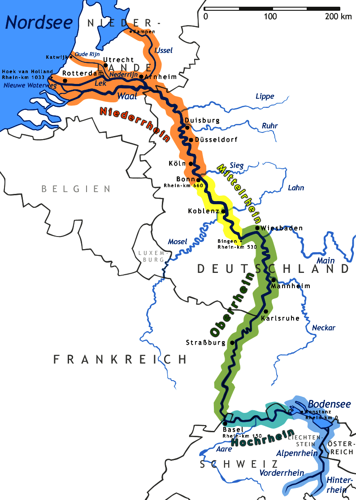

|
General Info
The Rhine is a river that flows from Grisons in the eastern Swiss Alps to the North Sea coast in the Netherlands and is one of the longest and most important rivers in Europe, at about 1,233 km (766 mi), with an average discharge of more than 2,000 m3/s (71,000 cu ft/s).The Rhine and the Danube formed most of the northern inland frontier of the Roman Empire and, since those days, the Rhine has been a vital and navigable waterway carrying trade and goods deep inland. It has also served as a defensive feature and has been the basis for regional and international borders. The many castles and prehistoric fortifications along the Rhine testify to its importance as a waterway. River traffic could be stopped at these locations, usually for the purpose of collecting tolls, by the state that controlled that portion of the river. |

|
|
Length
The Rhine is one of the longest and most important rivers in Europe. Until 1932 the generally accepted length of the Rhine was 1,230 kilometres (764 miles). In 1932, however, the German encyclopedia Knaurs Lexikon stated the length as 1,320 kilometres (820 miles), presumably a typographical transposition error. After this number was placed into the authoritative Brockhaus Enzyklopädie, it became generally accepted and found its way into numerous textbooks and official publications. The error was discovered in 2011, and the Dutch Rijkswaterstaat confirms the length as 1,232 kilometres (766 miles). |
 |
If you would like even more info then we have you can go Here